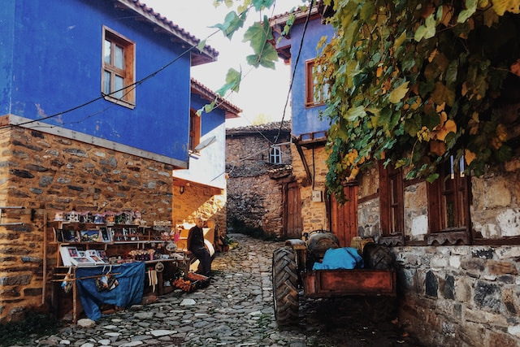
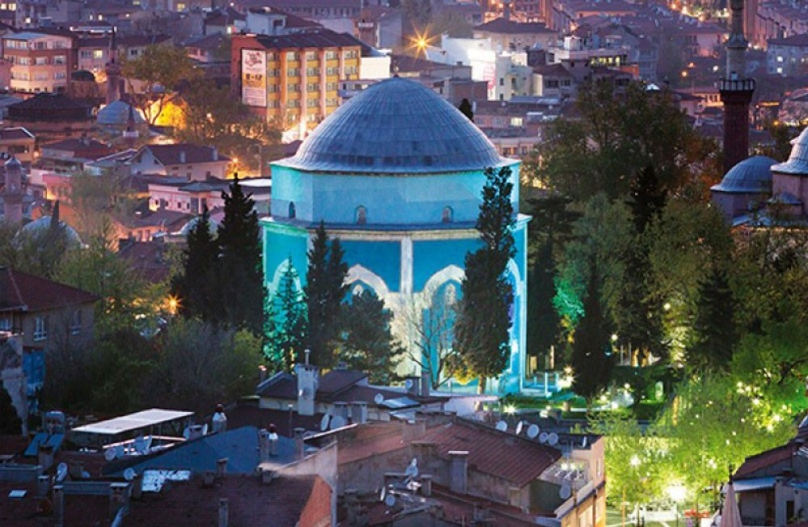

Uludağ
Daha fazla bilgi

Cumalıkızık
Daha fazla bilgi

Yeşil Türbe
Daha fazla bilgi
Türkiye'nin bir ili ve en kalabalık dördüncü şehri. 2022 itibarıyla 3.194.720 nüfusa sahiptir. Verimli ovası, termal kaynakları, gölleri ve tarihi değerleriyle Türkiye'nin en büyük ve en önemli kentlerindendir. Bursa'da en çok Osmanlı İmparatorluğu'nun kuruluş dönemine ait tarihi eserlerin bulunmasının sebebi ise, Bursa'nın Osmanlı Devletinin ilk başkenti olmasıdır. Bursa alışveriş merkezleri, parkları, müzeleri ve çarşısıyla bölgede öne çıkar.
Mirasımız : Hacivat ve Karagözİskender kebap, iskender döner veya Bursa Kebabı; Bursa yöresinin meşhur kebap yemeklerinden biridir. 1867 yılında Kayhan Çarşısı'nda başlamıştır.
Aslında temel malzemesi döner olsa da iskenderi iskender yapan, üstündeki tereyağ, domates sosu, yanındaki yoğurt ve altındaki yağlı pide parçalarıdır
Bursa'nın meşhur tatlılarından bir tanesidir. Kestane şekeri Bursa ili sınırları içindeki Uludağ'da yetişen kestanelerden yapılmaktadır.
Kestane şekeri haşlanmış kestane soyulduktan sonra tülbentlere bağlanarak kaynayan şerbet içine batırılarak yapılır. Kestane şekerinin çikolata vb tatlarla kaplı türleri de vardır.